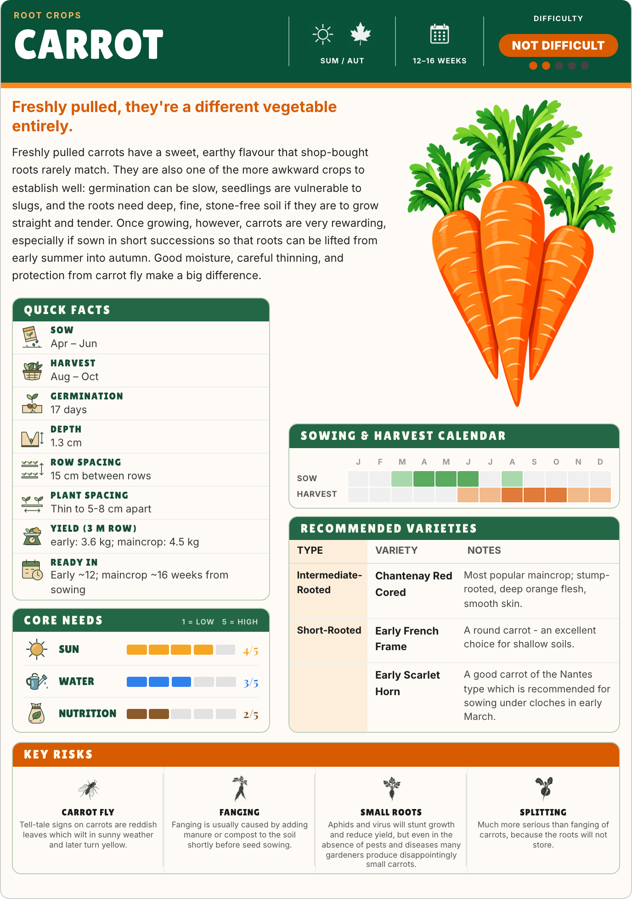
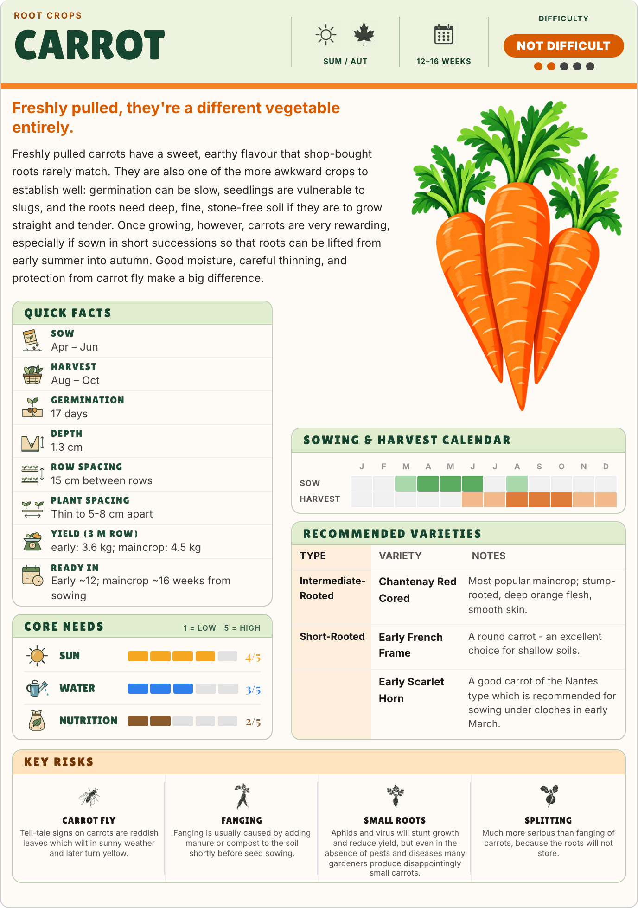
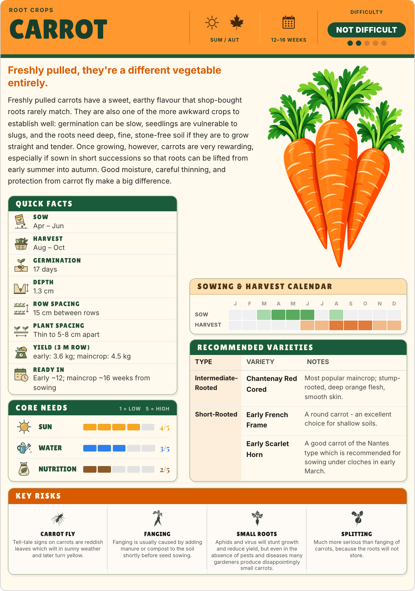

1 · Garden Green · Selected
Deep green title banner, leafy green panels and a sharp orange accent. The closest link to C’s green lettering and orange strip.


New: selected Garden Green two-page PDF pilot →
All three keep the chunky type and blocky carrot hero, with the existing widget types, order, dimensions and advice. These studies explore the colour and panel styling around them.
Deep green title banner, leafy green panels and a sharp orange accent. The closest link to C’s green lettering and orange strip.

Pale green panels and dark lettering let the carrot illustration lead. A quieter page with lighter areas of printed colour.

A bright orange banner, green titles, warm cream paper and subtle panel shadows. The boldest and most playful direction.
